Noordzji
Gerrit Noordzij began his career as a graphic designer and as a bookbinder's apprentice. Since then he has designed and authored dozens of books on typography and design. He also makes drawings, wood engravings, copper engravings, and inscriptions in stone and glass. In 1956 he was hired by the Amsterdam publishing house Querido, where he worked for two years designing many books and book covers. Most of the books published by Uitgeverij van Oorschot from 1978 onwards were also designed by Noordzij, and many of his type designs originated when designing these book covers.[1] He has even written computer programs for Canon. Noordzij wrote and edited Letterletter, a journal in English for ATypI on the subject of typography.
From 1960 to 1990, Noordzij was a professor of typeface design at the Royal Academy of Fine Arts in The Hague, Netherlands. From 1970 to his retirement in 1990, he was the director of the writing and lettering programme at the graphic design department.

Gerrit Noordzji
·Jan Middendorp, Dutch Type, 010 Publishers, Rotterdam (2004), p.150
·Gerrit Noordzij: The Meaning of Writing − sometimes the quote says 'letters' instead of 'characters'.
·Jan Middendorp, Dutch Type, 010 Publishers, Rotterdam (2004), p.151
·Full bibliography of Gerrit Noordzij on letterror.com